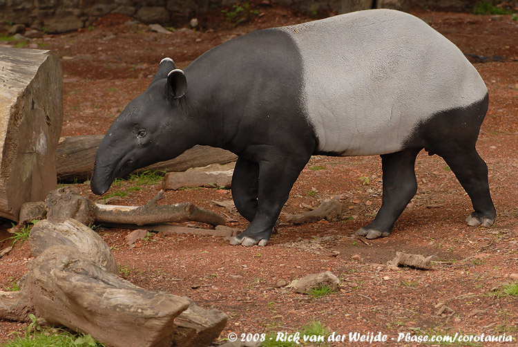

Tapirus indicus
The Malayan Tapir (Tapirus indicus) is the largest of the four tapir species and the only one found in Asia. It is immediately recognisable by its striking black-and-white body colouration — a natural camouflage that breaks up its outline in dappled forest light and mimics the appearance of a rock when sleeping.
Found in the lowland and hill forests of Peninsular Malaysia, Sumatra, and southern Thailand, the Malayan Tapir is classified as Endangered by the IUCN with an estimated wild population of around 2,500 individuals. In Malaysia, it is one of the most threatened large mammals, with its population declining due to persistent habitat destruction.
Tapirs are important "ecosystem engineers." As they move through the forest, they consume large quantities of fruits and disperse seeds over wide areas through their droppings, contributing significantly to forest regeneration. They are often described as the "gardeners of the forest."
The conversion of lowland forest — the tapir's preferred habitat — for oil palm cultivation, rubber plantations, and urban development is the primary driver of population decline.
Tapirs are highly vulnerable to vehicle collisions, particularly on roads that cut through or alongside forest reserves. Road kills represent a significant and ongoing cause of tapir mortality in Malaysia.
Tapirs are sometimes hunted with dogs for their meat, particularly in rural areas adjacent to forests in Peninsular Malaysia and Sumatra.
Infrastructure development — roads, dams, and plantations — fragments tapir habitat into isolated patches, preventing movement, gene flow, and access to food sources.
The government has constructed wildlife crossing structures — underpasses and overpasses — on major roads in Peninsular Malaysia to reduce tapir road kills.
PERHILITAN and Malayan Tapir Conservation Project operate rescue teams to treat injured tapirs and facilitate their return to the wild.
Systematic camera trap surveys are conducted in key forest reserves to monitor tapir population trends and distribution across Peninsular Malaysia.
Road safety campaigns targeting communities and drivers near tapir habitats aim to reduce vehicle collisions, a leading cause of tapir mortality.